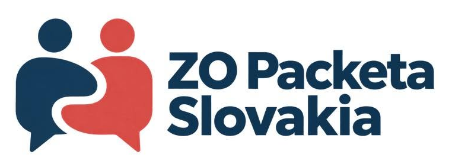

Priestor pre váš hlas
Individuálne skúsenosti pomáhajú pomenovať témy, ktoré sa týkajú viacerých ľudí.

ODBOROVÁ ORGANIZÁCIA ZAMESTNANCOV
Sme ZO Packeta Slovakia. Spájame skúsenosti zamestnancov a dávame spoločným témam jasný hlas.
Chcem sa pridať ↗Dobrovoľne. Informovane. S rešpektom k súkromiu.
Váš hlas.
Naša spoločná sila.
KTO SME
ZO Packeta Slovakia je odborová organizácia zamestnancov Packeta Slovakia. Naším cieľom sú férové, zrozumiteľné a predvídateľné pracovné podmienky.
Individuálne skúsenosti pomáhajú pomenovať témy, ktoré sa týkajú viacerých ľudí.
Podnety overujeme a pripravujeme na rozhovor. Presadzujeme rešpekt a konkrétne ďalšie kroky.
Členstvo ani osobné prípady nepatria do verejných komentárov. Chránime súkromie ľudí.
AKTUALITY
Ahojte kolegovia,
od založenia odborovej organizácie pri Packeta Slovensko uplynuli už 3 týždne a radi by sme vás informovali o tom, čo sa za tento čas udialo a kam sme sa posunuli.
Dňa 17. 9. 2026 sme sa stretli so zástupcami vedenia spoločnosti Packeta za účasti jej právnych zástupcov.
Na stretnutí sme pomenovali naše požiadavky aj dôvody vzniku odborovej organizácie. Zdôraznili sme, že sme tu pre všetkých zamestnancov bez rozdielu – kolegov z dep, centrály aj terénu vrátane obchodných zástupcov a kolegov z networku.
Chceme, aby v Packete platili férové podmienky, jasné a transparentné pravidlá a aby sa zamestnanci nemuseli báť povedať svoj názor či upozorniť na problém.
Naším cieľom nie je stáť proti Packete. Chceme zastupovať zamestnancov a byť partnerom, ktorý dokáže pomenovať problémy a pomáhať hľadať riešenia.
Čo nás čaká ďalej?
Začneme s prípravou na rokovania o kolektívnej zmluve, budeme sa aktívne podieľať na tvorbe Pracovného poriadku a pokračujeme v prijímaní nových členov. Čím viac nás bude, tým silnejší hlas budú mať zamestnanci pri témach, ktoré sa ich priamo týkajú.
A hlavne – sme tu pre vás. Pre všetkých zamestnancov Packety na Slovensku.
Packeta nie je len o depách, technológiách, zásielkach či číslach. Tvoria ju predovšetkým ľudia. Bez vás by nebola tam, kde je dnes, a bez vás sa neposunie ani tam, kde môže byť zajtra.
Chceme, aby váš hlas bolo počuť.
AKO FUNGUJEME
Pomenujeme tému a jej dopad na pracovný život.
Oddelíme fakty od domnienok a doplníme súvislosti.
Pripravíme konkrétny návrh a postup rokovania.
Vysvetlíme potvrdený výsledok a ďalší krok.
PRIHLÁŠKA
Členstvo je dobrovoľné. Pred podpisom si od výboru vyžiadajte stanovy, aktuálne podmienky a informácie o spracúvaní údajov.
Tento formulár slúži na prípravu prihlášky na tlač. Údaje sa neodosielajú a web ich neukladá. Vyplnenú a podpísanú prihlášku pošlite ako prílohu e-mailu na info@odborypacketa.eu alebo poštou na sídlo ZO Packeta Slovakia, Strážska cesta 10406/28, 960 01 Zvolen. Prihlášku neodovzdávajte zamestnávateľovi Packeta ani jeho zástupcom.
Prílohu pridajte sami vo svojom e-mailovom programe. Web ju automaticky neodosiela.
Odborová príslušnosť patrí medzi osobitné kategórie osobných údajov. Neposielajte prihlášku cez sociálne siete.
Stiahnuť oficiálnu prihlášku (DOCX)
Ako chránime vaše údaje · Cookies
Vyplňte údaje, uložte ako PDF alebo vytlačte a podpíšte. Samotné vyplnenie neznamená prijatie za člena.
KONTAKTY
Máte otázku k členstvu? Obráťte sa na výbor odborovej organizácie.
Osobné prípady a citlivé dokumenty nezverejňujte v komentároch.